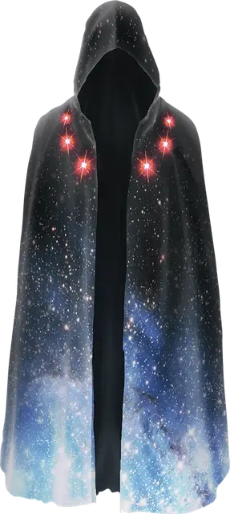

Мантия звёзд
Robe of Stars
Чудесный предмет, очень редкий (требуется настройка)

Рекомендованная стоимость 40 000 ЗМ
Эта чёрная или тёмно-синяя мантия украшена мелкими белыми или серебряными звёздами. Пока вы носите её, вы обладаете бонусом +1 к спасброскам.
Шесть особенно крупных звёзд расположены на передней части мантии. Пока вы носите эту мантию, вы можете действием Магия снять одну из звёзд и потратить её, чтобы сотворить заклинание Волшебная стрела 5-го уровня. Каждый день при наступлении сумерек на мантию возвращается 1к6 снятых звёзд.
Пока вы носите мантию, вы можете совершить действие Магия перейти на Астральный план вместе со всем, что носите и несёте. Вы остаётесь на Астральном плане до тех пор, пока действием Магия не вернётесь на прежний план. Вы появляетесь в последнем пространстве, которое занимали, или, если это пространство занято, в ближайшем незанятом пространстве.